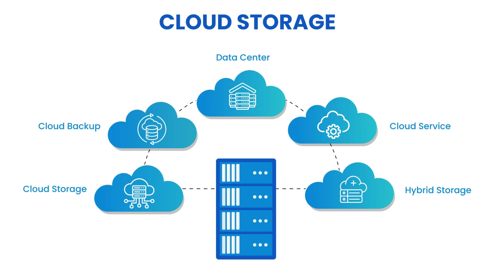

Name: Alaa Mohamed
ID: 2502670
Cloud computing is the delivery of computing services over the internet. It includes servers, storage, databases, networking, software, and analytics. Instead of buying physical servers, companies can rent access to these services from a cloud provider.
Cloud computing helps reduce costs, increase flexibility, and allows access from anywhere.

The cloud is divided into three main service models: IaaS, PaaS, and SaaS.
| Service Model | Used By | Example |
|---|---|---|
| IaaS | System Admins | AWS EC2 |
| PaaS | Developers | Google App Engine |
| SaaS | End Users | Google Drive |